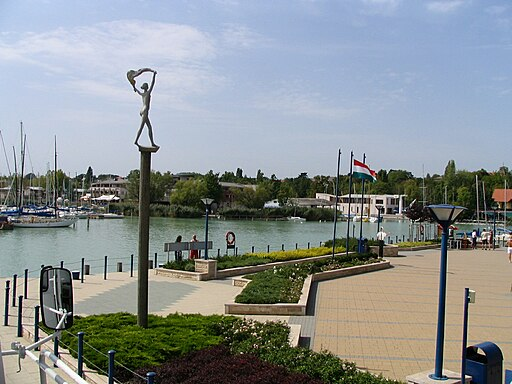
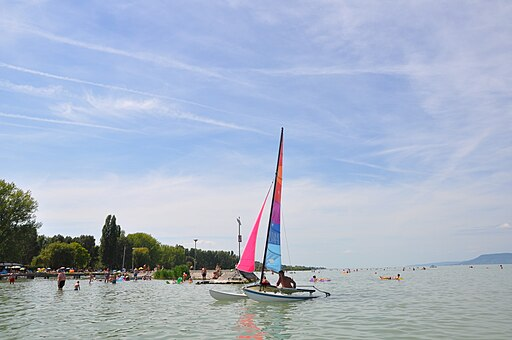
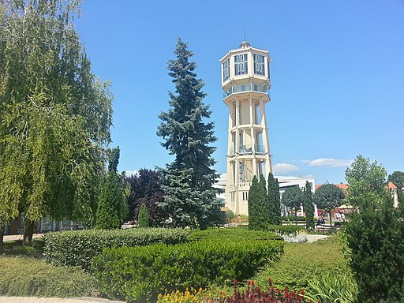
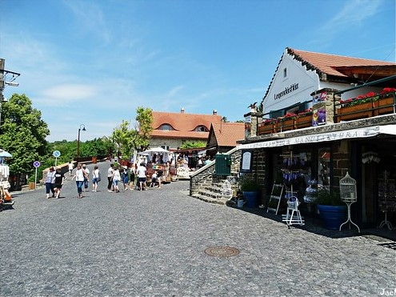

Balatoni üdülőhelyek
A Balatonnak több mint 200 kilométer hosszú partszakasza van, gyönyörű természettel körbeölelve, emiatt a tópart számos érdekes üdülőhelyet kínál. Íme néhány a legnépszerűbbek közül.
Balatonfüred
Balatonfüred a Balaton-part legrégebbi üdülőhelye. Vonzereje elsősorban gyönyörű fekvésében, szénsavas termálforrásainak gyógyhatásában és a felvidéken termő zamatos, jó boraiban rejlik. Ezek mellet említésre méltó még a városi park, amely több mint 100 éves és sok ritka növény termőhelye és persze a helyi magyar emberek szívélyes vendéglátása is. Történelmi, kulturális hagyományaik, évtizedekre visszatekintő rendezvényeik és természeti kincseik minden évszakban a városba csábítják az érdeklődőket.
Balatonlelle
Balatonlelle az egyik legismertebb üdülőhely a Balaton déli partján. Leginkább a csodálatosan szép vízparti részéről ismert. A balatonlellei strand az egyik legnagyobb és legszebb a Balatonon és rendszeresen kap kitüntetéseket a tisztasága miatt. Található itt egy Aquapark is, amely főleg a gyerekek körében népszerű. Nyáron a sétáló utcában a mólónál számos fesztivál és rendezvény van, mint a hagyományos balatonlellei borhetek. A központtól távolabb a 7 főút mellett pedig egy van nagy Kalandpark sok attrakcióval. Emellett itt vendégeskedik minden nyáron a Magyar Nemzeti Cirkusz az aktuális műsorával.
Siófok
A "Balaton fővárosaként” is emlegetett Siófok, nyaranta a déli part egyik legkedveltebb, leglátogatottabb turisztikai célpontja. A város pörgős éjszakai életéről ismert. A Balaton egész területén itt található a legtöbb és legnagyobb diszkók, klubok. Nyáron számos szabadtéri rendezvény is szórakoztatja vendégeit. Messze környéken ismert a közvetlenül a Nagystrandon található Plázs. Itt mindenek előtt sok zenei rendezvény van. A látnivalók közül egyik legfontosabb a Víztorony, mely 1912-től fogva a városközpont dísze. A Siófoki Kikötő, ahonnan a menetrendi sétahajók is indulnak, a legnagyobb a balatoni kikötök közül. Innen nyáron megcsodálhatjuk a híres balatoni naplementéket is.
Tihany
Tihany a Balaton egyetlen félszigete. A keleti oldalán található az azonos nevű település. A tihanyi félsziget a balatoni régió egyik legismertebb látványosságai közé tartozik. A tó mellett sehol máshol nem lehet ennyi történelmi épületet megcsodálni és a magyar történelmet közvetlenül megtapasztalni. A leghíresebb látnivaló a 1055-ből származó apátsági templom, de az innen vezető sétányon végighaladva egy 1820-ban épült, műemléki oltalom alatt álló, szépen megőrzött parasztházhoz is eljutunk. Ezen kívül említésre méltó még a babamúzeum, mintegy 600 porcelánbabával az 1840-1920-as évekből, mely egy 40 éves gyűjtőszenvedély eredménye.